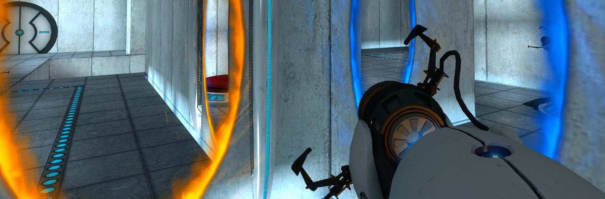

Le délicat mariage de la narration et du gameplay
L'article original est écrit par Ara Shirinian publié par Gamasutra (janvier 2010).
L'auteur original n'est en aucun cas reponsable de la précision de cette traduction.
Le jeu vidéo est un médium incroyablement puissant et complexe. Au vu de toute son histoire (tous ces Pokémons et ces fusils de la Seconde Guerre mondiale ne sont absolument pas à négliger), on peut penser que le jeu vidéo est l'unique médium qui puisse rassembler tous les autres média qui l'ont précédé. Rappelez vous que dans les années 70, les jeux vidéo n'étaient généralement que des applications à la jouabilité rigide. Lorsque vous achetiez un jeu pour votre Atari 2600, il allait sans dire que ce que vous possédiez était, à de rares exceptions près, un système de règles, un objectif à atteindre et une interface au sein de laquelle jouer.

Les jeux vidéo en 2009 utilisent encore largement ces mêmes ingrédients, mais le développement technologique de ces quatre dernières décennies a permis à nos jeux d'utiliser une myriade d’autres moyens d’expression que la plupart d’entre nous tiennent pour acquis.
Les changements n’ont pas été quantitatifs mais qualitatifs, et ont tellement étendu la signification de l'expression « jeu vidéo » que son sens originel semble avoir dans certains cas complètement disparu. Les jeux des années 70 ne pouvaient pas exprimer l'étendue du paysage qui se déploie devant vous dans un DiRT 2, le mystère des premiers pas dans l’utopie en ruine de Bioshock, ou ce pur concentré de tradition tolkienesque raconté à travers les livres d’Oblivion. Ils ne pouvaient pas exprimer les subtilités auditives de Batman : Arkham Asylum, le mélange de douceur et d'agressivité de votre hôte dans Portal ou la tension brûlante entre Snake et Ocelot dans la série des Metal Gear Solid.
Silencieusement et sans l'assumer, pour le meilleur ou le pire, le jeu vidéo d’aujourd’hui a évolué au-delà de la simple abstraction du gameplay, vers un médium de divertissement général pouvant contenir des images, des sons et des textes de tous types. En effet, nous avons déjà dépassé le stade au-delà duquel le type et la qualité d'exposition ne sont plus limités par une quelconque contrainte technologique mais uniquement par nos choix et et notre ingéniosité. A proprement parler, le jeu vidéo est à même de donner forme à une narration (comme le cinéma) et à un gameplay (qui est quant à lui spécifique de l'interaction entre humain et machine). La majorité des gens pense aujourd'hui que le cinéma est plus adapté que le jeu à l'expression de la narration. A l'inverse, le gameplay sont une qualité propre au jeu vidéo. Pourtant, les jeux vidéo sont aussi aptes à construire une narration : techniquement parlant, ils ont la plupart des capacités du cinéma. Le jeu vidéo est ainsi le seul médium en lice si vous voulez du gameplay, et il constitue un bon support pour exprimer la plupart des choses que nous avons faites dans le domaine du cinéma. Il n’est donc pas surprenant que nombre des plus brillants développeurs de jeux aient tenté de les combiner de manière élégante – d’unifier les deux média, si vous préférez.
Il y a quelques années, il y a eu une explosion médiatique autour de la perspective d’inciter les joueurs à pleurer. Selon Neil Young, alors General Manager de EA Los Angeles :
« L'une des choses les plus importantes pour nous, c'est de répondre à la question sur laquelle notre entreprise s'est construite : « Un jeu vidéo peut-il vous faire pleurer ? ». C'est une question à laquelle Steven Spielberg peut aider EA à répondre. »
Peu après, le designer David Jaffe révéla qu’il était en train de travailler sur le même problème avec l’un de ses concepts de jeu : « L’un d’eux est d’être le jeu vidéo le plus émouvant jamais créé. L’objectif final est que les joueurs, à la fin du jeu, soient réellement choqués – s’ils ne pleurent pas – parce que nous avons très bien fait notre boulot. »
Hideo Kojima, qui s’est fortement concentré sur la narration avec ses Metal Gear Solid, a également exprimé son désir d’intégrer ces éléments dans un gameplay plus efficace que ce que lui et d’autres ont été capables d’accomplir :
« Halo, BioShock – je vois leur approche et je pense qu’ils sont brillants d’une certaine manière, mais je sens qu’il manque encore une sorte de profondeur dans le scénario, ou dans l'expression des sentiments des personnages. J’ai des idées sur la manière d'essayer d'aborder et de contourner ça. »
« Dans Metal Gear Solid 4, oui, j’ai tout donné dans les scènes cinématiques. Ce que je regrette dans une certaine mesure, parce qu’il y a peut-être une nouvelle approche à laquelle je devrais penser. J’y pense toujours – les rendre interactives mais, en même temps, raconter la partie scénarisée et les événements dramatiques plus sensiblement. J’aimerais réussir une telle approche, et j'y travaille encore. »
Selon lui, il s'agit une progression et une combinaison logiques. Vous ne faites que regarder un film, mais vous jouez au jeu et tout ce qui est exprimé dans le film peut aussi être contenu dans un jeu. « Une narration au sein laquelle on jouerait » semble alors être le Saint-Graal du jeu, non ?
Mais pourquoi n’avons-nous pas encore accompli cette parfaite synthèse du gameplay et de la narration ? Pourquoi y a-t-il toujours eu des compromis et des combinaisons guindées entre les deux ? Sommes-nous trop naïfs, ou juste insuffisamment intelligents en tant que créateurs de jeu pour le découvrir ? Ou y a-t-il quelque chose d’autre ?
Pour le savoir, nous devons tout d’abord évaluer ce que nous avons déjà accompli dans ce domaine, avant d'examiner chaque medium, pour déterminer s'il y a un élément qui fait de ce problème quelque chose de plus épineux encore que de réussir le mélange du beurre de cacahuète et du chocolat.
Il y a du gameplay dans ma narration… Ou de la narration dans mon gameplay ?
Narration et gameplay sont sans aucun doute les deux formes d’expression les plus importantes dans le jeu vidéo actuel. Mais avant de nous jeter à l'eau, commençons par préciser ce que nous entendons respectivement par narration et gameplay.
Le gameplay est relativement simple à définir pour nos besoins. Toute action, dans le jeu, produite par le biais de l’interaction entre le joueur et le jeu, est appelée gameplay.
Techniquement parlant, la narration est juste la description d’une série d’événements. A son niveau le plus atomique, pratiquement n’importe quel élément virtuel du jeu peut porter une sorte de narration en lui, en vous racontant quelque chose à propos du contexte et de l’histoire.
Habituellement, quand on parle de narration dans le domaine du jeu vidéo, on pense souvent aux cinématiques, à l'intrigue, aux relations entre les personnages et aux histoires racontées dans le cadre d'un jeu. Toutefois, l'image d'une lame abîmée couverte de sang constitue un élément de narration au même titre qu'une scène entre deux personnages en plein débat sur leur prochaine destination. La principale différence est celle de la complexité, de la sophistication. Dans le premier exemple, la narration est exprimée en un seul visuel : je vois une lame, elle a récemment provoqué le sang et a heurté un objet très dur. Dans le second exemple, la narration est portée par des éléments visuels, comme le choix du cadre ou des costumes, mais aussi par la performance des acteurs, la gestuelle, la voix, etc.
Il s'agit d'un point essentiel : la dimension graphique du jeu crée toujours une certaine forme narration, d'histoire, qui est racontée au joueur (ou du moins est interprétée par celui-ci). Le joueur aura une tendance naturelle à inventer une histoire autour de cette image de lame ensanglantée, même si ce n'était pas proposé ou attendu par le concepteur. Même les jeux d'action pure sans scénario incluent une part de narration, parce que le joueur va toujours essayer d'extraire un sens, et par extension une histoire, des graphismes.
Le fait est qu’il existe des techniques narratives extrêmement variées, qui ne nécessitent pas les mêmes moyens. Vous n’avez qu’à regarder l’épée pendant quelques secondes pour comprendre qu’elle vient de servir à tuer quelqu’un et qu’elle a passé quelques moments difficiles.
Mais considérez maintenant notre exemple des deux personnages débattant sur leur prochaine destination. Avant que nous ne puissions comprendre comment, pourquoi et ce dont ils discutent, ou même la nature de leur relation, nous devons les observer pendant un plus long moment et ne pouvons interrompre leur échange prématurément. Le type de narration utilisé impose certaines contraintes. Si ces exigences ne sont pas satisfaites, l’élément narratif ne peut pas être correctement transmis. C’est pourquoi la plupart des jeux ne vous laissent pas tuer les personnages essentiels au développement de certaines intrigues. Si nous tuons l’un des deux personnages qui était juste en train de commencer le débat, nous n’apprendrons jamais pourquoi ils étaient en train de discuter. Nous venons de détruire le mode de communication de la narration au joueur qu’était la conversation de tiers.
Puisque l’idée de narration est tellement vaste, nous devons, pour les desseins de cette discussion, être très précis sur le genre de narration dont nous parlons.
Il est clair que le jeu vidéo en est resté longtemps au stade d'une combinaison rudimentaire de gameplay et de narration visuelle basique. Quand je joue à Gradius, il y a une narration même s'il n'y pas d'histoire à proprement parler. Je contrôle un vaisseau, je suis dans l’espace et je tire sur des méchants. Je vais tirer sur tous les méchants que je vois jusqu’à que j’arrive au plus méchant d’entre eux, puis je vais tirer sur lui aussi. Ce n’est pas l’intrigue la plus intéressante qui soit, mais elle existe. Ainsi, le projet des concepteurs n'est pas de combiner simplement gameplay et narration visuelle : on le fait depuis qu'il est possible de dessiner quelque chose qui ressemble plus à une lame aliasée qu'à une ligne de pixels blancs.
Ce projet consiste en réalité à combiner élégamment et sans compromis les évolutions les plus riches du gameplay et de la narration. Dans la suite, quand nous parlerons de narration, nous entendrons par ce terme le genre de narration plus substantiel qu’un sprite ou un background graphique, plus lent à digérer – le fil d'une conversation, une histoire qui implique des personnages, leurs relations et leurs dispositions les uns à l’égard des autres, etc.
Intéressons nous maintenant jusqu'à où nous ont permis d'aller certaines des meilleures expériences de combinaison entre gameplay et narration.
Comment une narration sans restriction affecte-t-elle le gameplay ?
En 1983, Dragon’s Lair était l’une des premières et plus célèbres tentatives de réconciliation entre narration cinématique et gameplay. Grâce à l'utilisation d'un lecteur à disque laser, ce jeu d’arcade proposait des graphismes incroyables, qui sont restés inégalés pendant près d'une décennie. Malheureusement, les limites de la technologie ont ici imposé que le gameplay soit en contrepartie réduit à un niveau beaucoup plus bas que celui des autres jeux de l'époques : une séquence cinématique non interactive se joue et, à la fin, le joueur doit presser quelques boutons – que ce soit une direction ou une « attaque ». S'il presse le bon bouton, le joueur assiste à une animation de mort. S'il presse le mauvais bouton, le joueur assiste à la séquence cinématique suivante. Comme le jeu était conçu avec peu de considération pour la lisibilité de l’action par le joueur, ce dernier était très souvent obligé de faire des suppositions : réussir le jeu passait par un nombre d'essais et de tâtonnements épouvantables.
Seize ans plus tard, Shenmue sort sur Dreamcast et propose un système de jeu spécial appelé « Quick Time Event » ou QTE. Pendant un QTE, les boutons apparaissent à l’image à différents intervalles. Si vous pressez le bouton correspondant suffisamment rapidement sur la manette, votre personnage exécute l’action correspondante. C’est structurellement identique à Dragon’s Lair, excepté ces signaux explicites apparaissant à l’écran. Qu’y a-t-il à gagner en créant un jeu de cette manière ? Selon les principes d'un « bon » créateur, une attention particulière devrait être portée à la présentation de l'action, de façon à ce que le joueur puisse voir ce qu'il fait et ce que l'ennemi fait et ainsi à appréhender précisément les relations spatiales entre tous les éléments participant au gameplay dans la scène.
Avec cette abstraction extrême du gameplay, le créateur prend la liberté d’exposer impunément l’action aussi cinématiquement que possible, parce que l’action est devenu tellement abstraite que le joueur n’a pas besoin de savoir exactement ce que son avatar est en train de faire, ce que l’ennemi est en train de faire, ou comment un changement dans les règles dans cette séquence pourrait avoir un impact sur l’action dans une autre partie du jeu. En fait, nous avons rejeté toutes les difficiles considérations de création que nous aurions eu à gérer avec un gameplay conventionnel.
Dans le même temps, on sacrifie ici quelque chose de précieux en contrepartie cette ultime abstraction du contrôle. Comme nous nous sommes débarrassé de toutes les difficultés liées au gameplay, nous avons, nécessairement, tellement découplé le gameplay et l’action que le joueur n’a en réalité pas besoin de faire attention à quoique ce soit d’autre qu’à l'icône lui indiquant le bouton à presser. Si on mettait simplement un écran noir, à la place de la scène cinématique, la nature de l’interaction resterait inchangée. God of War, sorti six ans après Shenmue, emploie un système virtuellement identique lors de certaines phases de jeu. Alors que la qualité cinématique de ces séquences est stupéfiante, et est sans aucun doute très loin au dessus de ce que notre précédent exemple pouvait proposer, il s'agit exactement du même type de dissociation de l'action et de la cinématique.
Gitaroo Man, sorti en 2002, offrait une narration cinématique de haut vol en tant que toile de fond, opérant de concert avec un gameplay rythme/action sophistiqué au premier plan. C’est un exemple intéressant car même si le gameplay est très connecté à la narration, les deux était vraiment dissociés, dans le sens où la narration ne contenait pas d’information qui vous aurait pu vous aider à jouer au jeu efficacement – comme dans le précédent exemple où l’interaction n’était pas affectée par quoique que soit provenant de l’arrière plan. Cependant, l’arrière plan était affecté par le gameplay, et cela résulte en une très belle illusion qui créa deux couches indépendantes perçues comme une seule. Le modèle de gameplay était scripté pour correspondre à la musique, et l’arrière plan narratif était aussi scripté pour coïncider avec la piste sonore. Le personnage du joueur et les ennemis posaient et agissaient selon vos commandes, bien que vous n’aviez pas besoin du tout de les remarquer ou de les observer pour jouer au jeu. Le créateur du jeu DS Elite Beat Agents a utilisé beaucoup de techniques identiques.
Ce que nous pouvons apprendre de ces exemples, au moins avec cette technique, est que le créateur gagne la liberté de faire tout ce qu’il veut avec la caméra de son jeu, et ainsi l’action d’arrière plan, au prix de sévèrement confiner la qualité du gameplay aux interactions du type « Appuie là, vite ! ». En d’autres termes, quand nous autorisons l’expression narrative sous forme de cinématiques illimitées durant le gameplay, ce dernier doit lui-même être sévèrement limité ou découplé de la narration.
Comment la narration restreinte affecte-t-elle le gameplay ?
Supposons que nous avons une narration que nous voulons transmettre, et nous voulons le faire pendant le gameplay, mais nous décidons de restreindre les moyens que nous avons pour l’exprimer – par exemple en la limitant à un seul type de médium. Examinons maintenant différents chemins que les créateurs de jeux ont empruntés dans ce type de situation.
Dans Bioshock, le support narratif est fréquemment limité à un canal sonore, sous la forme de journaux audio que le joueur prend et écoute s'il le souhaite tout au long du jeu. Quand la narration est limitée à l’audio, cela signifie que toutes les autres canaux disponibles restent ouverts pour participer au gameplay. Comme le langage visuel est sans conteste la plus importante méthode pour faciliter le gameplay, cela signifie que le joueur peut appréhender la narration auditive sans grande interférence ou limitation sur l’action du jeu. Aussi longtemps que l’audio de la narration n’interfère pas avec n’importe quel signal audio pouvant être crucial pour le gameplay, narration et gameplay peuvent vivre assez bien côte à côte. Cependant, nous trouvons un important compromis même dans cet échange. Vous ne pouvez exprimer les mêmes choses de la même manière, purement auditive, comme vous le pourriez si vous aviez aussi le contrôle de la dimension visuelle. Vous avez seulement le volume, la durée et le ton pour exprimer la qualité d’une explosion. Vous ne pouvez pas décrire un personnage escalader la tête d’une hydre, excepté par la narration littérale (« Je suis en train d’escalader la tête de l’hydre ! »). Tous ces types de détails ne peuvent pas être adéquatement exprimés quand la narration se limite à l’audio.
Dans quelques uns des jeux Ace Combat, la narration est transmise au joueur via les communications radio provenant d’un radar spécial d’aéronef qui est essentiellement détaché des actions de gameplay, ainsi qu’il l’est des avions amis et ennemis engageant directement le joueur.
Ce cas est intéressant car le jeu assouplit aussi l’idée de la manière avec laquelle les radios communications travaillent pour présenter une narration plus convaincante. En dehors des amis, ennemis ou sources radios, vous avez à entendre les communications de tous les personnages, tout le temps. Contrairement à Bioshock, la narration auditive prend place dans le présent au lieu du passé. Dans Call of Duty 4 : Modern Warfare, la narration prend la forme d’un PNJ soldat qui opère à vos côtés, vous donne des instructions, ou vous avertit des obstacles auxquels vous allez faire face. En raison de cela, la narration est reliée au gameplay plus fortement que dans Bioshock ou Ace Combat, étant donné que nous avons maintenant un visuel, une source physique de narration à proximité s’exécutant de concert avec le gameplay.
Même dans cette situation, notre contrôle sur la narration est limité. Parce que le joueur a un contrôle total sur la caméra, nous ne pouvons voir le moindre travail de caméra comme une partie de l’expression narrative. Quand vous êtes en train de charger vos ennemis, vous n’avez pas beaucoup de temps pour regarder ce que fait votre collègue soldat. Call of Duty 4 met l’accent sur ce que dit le partenaire quand il y a des ennemis face à vous, et met l’accent sur le canal visuel lorsqu’il n’y en a pas.
De même, Half-Life 2 permet au joueur de rester dans la perspective et le contrôle du jeu pendant les scènes cinématiques, au lieu d’arrêter la caméra. Il y a deux compromis non évidents ici. Premièrement, le développeur doit précautionneusement amener le joueur à regarder vers la direction attendue pour qu’il puisse voir toute l’action. Cela peut être accompli en limitant la vue par l’intérêt du design inhérent à l’espace physique (si vous êtes à une entrée, il n’y a que deux directions intéressantes auquel regarder, et le joueur va avoir tendance à favoriser la direction dans laquelle il est déjà). D’autre part, le jeu doit établir un « code de confiance » : on ne jette pas un ennemi fou dans le dos du joueur pour le poignarder, alors qu'il regardait deux autres personnages converser. Même si l’interface est inchangée des scènes de gameplay aux scènes narratives, le joueur a besoin d’une indication ainsi que de cette cohérence pour « savoir » que son attention doit se porter sur la conversation au lieu d’aller aux quatre coins de la pièce pour chercher objets et ennemis. Dans chaque cas, vous ne pouvez jamais garantir que le joueur va vraiment regarder ce qu’il est supposé voir.
Dans ces exemples, on peut remarquer que, quand l’expression narrative est restreinte d’une certaine manière, le gameplay peut se développer de manière plus riche.
Dans quelle mesure narration et gameplay sont-ils en concurrence ?
Reprenons le dernier exemple, où je décrivais l’intérêt d’établir un code de confiance dans les situations narratives lorsque le joueur y a un certain contrôle. Il y a aussi un d’intérêt à la duplicité et la surprise narrative. Imaginons à présent que nous voulions vraiment que le joueur expérimente l’effet de regarder confortablement deux personnages discuter l’un avec l’autre, avant de sentir une décharge de surprise quand quelque chose l'attaque soudainement par derrière. Dans les films, c’est une technique totalement valide et fréquemment utilisée. Dans les jeux, nous avons besoin de procéder plus prudemment. Mais pourquoi ? Dans un film, le public n’a aucun contrôle sur ce qui se passe. Le réalisateur du film, s’il le souhaite, peut savourer la liberté de poignarder le spectateur dans le dos encore et encore, impunément. Le spectateur est entraîné à craindre et s’attend à la possibilité d’un coup en traître, et il ne peut rien faire pour l’empêcher.
Considérons maintenant ce qui se passe dans un jeu. Nous plaçons le joueur dans une scène cinématique où il est totalement en contrôle, où il semble n'y avoir aucun danger et où le seul élément intéressant est deux personnages en train de parler. Le joueur a sa garde baissée, et assiste à la conversation. Sans avertissement, nous le surprenons en le plaçant sans prévenir dans une situation possiblement mortelle.
Mission accomplie pour le développeur, mais nous avons maintenant un joueur entraîné à rester vigilant, et cette attente a des conséquences désastreuses, parce que le joueur garde le contrôle pendant la narration. La prochaine fois que le joueur assistera à une scène cinématique, son attention sera focalisée sur l'éventuel ennemi caché dans le décor et non sur la narration.
Tout espoir que le joueur fasse attention à la narration s’est évaporé. Le prix de cet effet de surprise sur le joueur est la perte de sa confiance, et cette crainte diminuera pas à moins que le joueur assiste à une longue succession de scènes cinématiques sans incident.
La plupart des jeux manient ce type de scénario en travaillant sur la duplicité de telle manière que c’en est inévitable – sans conséquence en termes de gameplay – et donc restreint pour la narration. De cette manière, le joueur est surpris, mais ensuite réalise : « Oh, j’étais censé mourir. ». Il place alors l'action dans la poubelle mentale des « Choses qui arrivent dans la scène cinématique » ou celle des « Trucs qui arrivent dans le jeu ». Il est intéressant de voir que cet effet travaille complètement contre l’intention de brouiller ou de supprimer la frontière entre interaction et narration. Mais c'est ici moins notre « inaptitude » en tant que créateurs qui est en jeu qu'un effet indissociable de « l'entraînement » que subit le joueur.
Supposons à présent que vous n’aimez pas être frappé au visage. Si vous êtes sur le point de voir l’hypothétique film John Frappe Daniel dans la Figure 80 Fois, le réalisateur peut dire que Daniel ne va pas se défendre, même contre la volonté du spectateur, parce que l’intention est de faire en sorte que le spectateur sache ce que ça fait de se faire frapper au visage 80 fois successivement. Mais dans le jeu John Frappe Daniel dans la Figure 80 Fois, où vous jouez Daniel et où vous avez une barre de vie limitée (et où vous pourriez être amené à subir quelques désagréments en termes de jeu si vous recevez tout ces coups), vous allez sans aucun doute faire tout ce que vous pouvez pour éviter de vous faire frapper. La seule manière pour nous de vous faire sentir la succession de 80 poings est de vous « geler », d’une certaine manière. Mais si vous êtes gelés, nous sommes alors en train de regarder un film, et non de jouer à un jeu.
Il existe des actions vous ne pouvez faire subir à une personne quand elle a le contrôle de la situation. Dans notre contexte, cela veut dire qu'il y a des choses que vous pouvez faire dans la narration mais pas dans le gameplay. La prochaine question logique serait donc : « Y a-t-il des choses qui fonctionnent dans le gameplay et sont impossibles à accomplir dans la narration ? »
Sans surprise, après une petite enquête, nous apprenons que la réponse à cette question est « Oui ».
Dans Why We Play Games, Nicole Lazzaro décrit huit catégories d’émotion qui sont communément expérimentées dans les jeux. Quelques unes, comme le Dégoût ou la Peur, peuvent être expérimentées à intensité égale si le médium est le gameplay ou le cinéma. Cependant, il y en a quelques unes qui sont vraiment exclusives au domaine du gameplay, car elles impliquent un effort comme pré-requis nécessaire.
Nous savons déjà que la narration stricte impose que l’observateur n’ait rien à dire sur le résultat des événements. Comme nous l’avons montré, cette limitation n’est pas négative par nature, vu que le thriller John Frappe Daniel dans la Figure 80 Fois ne pourrait exister sans ça. Ce seul élément distinctif a ainsi d’importantes implications – pas seulement que vous ne puissiez contrôler le résultat, mais aussi que vous n’êtes pas autorisés à exercer un effort significatif, dans n’importe quelle mesure. En effet, vous n’avez pas le moindre moyen d’exercer un effort dans le monde de la narration, même si vous le vouliez. Qu’est-ce que cela signifie ? Deux émotions propres au gameplay, « Kvell » et « Fiero », peuvent seulement exister comme possible conséquence d’un effort de la part du joueur – effort qui ne peut jamais être accompli dans une narration pure.
Kvell est un verbe, mais aussi un sentiment. C’est un sentiment de fierté, mais pas celui que vous pourriez ressentir quand vos enfants réussissent quelque chose. Vous ne ressentez pas Kvell quand vos enfants jouent aux jeux vidéo, mais quand vous êtes fier d’avoir appris à votre meilleur ami un combo secret de Street Fighter qu’il a utilisé pour remporter un tournoi, c’est Kvell.
Après avoir vu M. Miyagi former Daniel durant The Karate Kid, nous nous sentons bien lorsque celui-ci gagne finalement le combat contre le Cobra Kai au tournoi de karaté, mais nous ne pouvons sentir Kvell au-delà de ça, car nous ne l’avons pas formé nous-même. Kvell peut ainsi être vécu dans les jeux où le joueur a le contrôle sur l’entraînement, l’instruction et la culture de ses subalternes – comme dans Oddworld et Pokémon.
Fiero, d’un autre côté, est le sentiment spécifique au succès après que quelqu’un ait entrepris un effort significatif pour accomplir quelque chose. Quand vous battez un boss difficile après plusieurs défaites ou comprenez finalement un puzzle provocateur, ce sentiment de victoire que vous ressentez est Fiero. Les drogués de Fiero adorent jouer à des jeux difficiles et extrêmement fastidieux, parce que tout est question de récompense pour eux. La satisfaction intense gagnée à surmonter les challenges dans ce genre de jeux l’emporte de loin sur n’importe quelle torture que le game designer déchaîne (involontairement) contre eux.
Pour revenir à l'exemple de Karate Kid, nous ressentons certainement de la joie ou du soulagement quand Daniel gagne le tournoi. Mais nous n’avons fait aucun effort pour nous-mêmes gagner un tournoi, donc la signification de victoire n’est pas la même pour nous que pour Daniel-san. La narration peut décrire l’expression de Fiero de Daniel-san, mais ne peut pas nous faire ressentir cette émotion de la même manière. La seule chance que vous avez de faire ressentir au joueur un tel sentiment est à travers le gameplay.
Comment le cinéma perturbe-t-il la continuité pour améliorer la narration et dans quelle mesure la continuité est-elle essentielle au gameplay ?
Un autre terrain où gameplay et narration entrent régulièrement en conflit est celui de la continuité et de la précision de l’expression de l’action. Le rapport à la continuité est un élément essentiel pour comprendre ce qui sépare narration et gameplay.
Dans le gameplay, la continuité des événements est très importante, alors que dans la narration, ce n’est pas le cas. En fait, dans la narration, la continuité est sacrifiée au profit de l'expression de l’histoire. C'est pour ça que les monteurs de film créent régulièrement des séquences d’événements impossibles afin de rendre l’histoire plus fascinante.
Nous ne sommes pas en train de parler « d’impossibles » comme d’irréalisables ou de fantastiques, comme esquiver une balle, mais « d’impossibles » dans le sens de la continuité et de la compression temporelle, comme nous allons le voir rapidement. En tant que spectateurs, nous acceptons systématiquement ceci comme valeur logique parce qu’après des années et des années d’exposition aux films, nous avons acquis une compréhension intuitive de la grammaire de la caméra comme support de la narration, de même que sa manière de remonter et sauter dans le temps et l’espace.
A l’inverse, dans le gameplay, si la continuité n’est pas exprimée d’une manière parfaitement précise, cela interfère avec la capacité du joueur à prendre des décisions ou à comprendre une situation.
Analysons l’exemple d’un combat en un contre un. Dans Rocky IV, le combat entre Rocky et Drago dure quinze longs et éprouvants rounds. Pendant le déroulement du combat, nous voyons d’abord Drago dominer totalement Rocky, fidèle à sa réputation de machine invincible. Petit à petit, Rocky revient, et le match devient de plus en plus tendu, comme la vague s’abat d’arrière en avant, encore et encore, jusqu’à ce que Drago cède. Il y a là quelques éléments intéressants, et cela vaut la peine d’étudier la séquence entière si vous y avez accès (essayez de chercher « Rocky vs Drago » sur Youtube).
Premièrement, examinons l’action de la caméra. Le match commence avec une caméra en quasi « live » pour les premiers rounds, où l’attention est principalement focalisée sur Rocky et Drago. Pendant les dix rounds du milieu au minimum, la séquence devient un montage. Le temps est compressé, alors que nous voyons les images de chaque round voler à travers l’écran non pas par minutes, mais plutôt par secondes. Nous voyons la caméra se focaliser et faire ainsi disparaître les personnages dans l’audience, on voit quelques enfants regarder la télé, juste au moment où nous pouvons voir leurs réactions. La caméra semble réduire son angle de vue (même pendant les moments non montés) pour se concentrer uniquement sur le combat jusqu'à l’instant exact où le poing de Rocky riposte. Nous voyons également des plans de caméra doubles qui sont séparés par le temps et l’espace où les boxeurs se battent sur la moitié droite de l’écran et où Rocky ou Drago est assis dans le coin du ring entre deux rounds.
Deuxièmement, examinons l’action des boxeurs. Nous n’avons pas une perception précise de leur état physique actuel ou de leur performance, en dehors de ce que le film nous raconte explicitement pour les effets dramatiques. Nous ne savons pas si les combattants sont proches de l'épuisement et l’histoire prend en fait l’avantage sur nous en suggérant que le match est sur le point de se finir pour de bon, juste avant de montrer Rocky revenir au combat avec une force surhumaine.
Il n’y a pas d'intérêt à savoir combien de directs se prend Rocky dans la figure et à quel point la blessure de Drago peut être douloureuse. Ce qui importe, c'est le contenu émotionnel de ces éléments, et c’est pourquoi ils sont utilisés dans le film. Considérez que beaucoup de plans de caméra montrant des poings échangés d’avant en arrière pouvaient être complètement remplacés par d’autres plans sans changer d’un poil la perception de la séquence.
Toutes ces techniques rendent la narration plus convaincante, et elles impliquent toutes de trancher et de couper l’ordre actuel des événements (s’ils ont jamais existé) au profit du rythme. Il n'y a là rien d'extraordinaire en terme de cinéma, mais la clé est que toutes ces techniques sont possibles seulement parce que le « joueur » n’a pas le contrôle sur ce qui se passe.
Voir la caméra coupée pendant quelques instants et perdre le contact visuel avec un opposant lors d'un combat est inacceptable dans un contexte interactif (Rocky et Drago ne se reposent certainement pas furtivement quand la caméra n’est pas sur eux).
Remplacer une série de poings par une autre fonctionne parce que personne ne garde exactement l’œil sur la manière dont les combattants sont blessés ou sur la façon dont cela affecte leur résistance au cours du match. Le public ne connait pas (ou ne prête pas attention à) ce niveau atomique de détail, ce qui permet au réalisateur d’en profiter. Mais dans le gameplay, le joueur fait attention, parce que chaque événement atomique a une conséquence définie en accord avec les règles du jeu.
Reprenons cet exemple du match de boxe, mais dans un contexte de gameplay. Examinons maintenant un match typique dans un jeu en un contre un comme Street Fighter IV. Nous ne pouvons couper vers une foule au milieu d’un match pour accroître l’excitation, parce que le joueur a un contrôle total sur son personnage. Au mieux, une telle tentative serait perturbatrice. Nous ne pouvons pas stylistiquement faire une « avance rapide » jusqu'à la fin du match, parce que le joueur crée littéralement la continuité du match à mesure qu'il se déroule. Et plus que tout, nous faisons attention à garder la trace du déroulement de chaque réussite et échec, même ceux qui n'ont pas d'importance dramatique, car les relations spatiales précises entre les personnages qui déterminent qui a frappé et car chaque personnage ne peut supporter qu'une certain nombre de coups avant de succomber.
Paradoxalement, les techniques qui rendent le cinéma fascinant brisent le gameplay, et les éléments essentiels au gameplay sont sans importance dans le cinéma.
Conclusion
L’objectif de cet article n’était pas d’encourager les puritains du gameplay qui semblent détester les histoires dans leurs jeux, ni de donner totalement raison à ceux qui voient le jeu vidéo comme un magnifique médium pour narrer des chroniques. Si vous vous trouvez dans l’un de ces camps, et même si vous ne vous y trouvez pas, j’espère avoir été capable de montrer que narration et gameplay ne sont pas comme des ingrédients qu'on cherche à mélanger en trouvant la température et le dosage idéaux, mais comme des outils différents qu'ils convient d'utiliser au bon moment.
Il y a certaines choses que les deux médias peuvent accomplir, mais il y a aussi beaucoup de choses qui sont spécifiques de la narration ou du gameplay. Comme pour n’importe quel outil spécialisé, c’est l’instrument adapté qui devrait être sélectionné pour le travail. Choisir le mauvais outil peut être maladroit au mieux, catastrophique au pire.
N’utilisez pas seulement la narration et le gameplay dans vos productions en suivant les conventions typiques. L’idée d’utiliser les deux simultanément avec un espoir aveugle que le résultat sera meilleur d’une certaine manière que de n’avoir utilisé que l’un ou l’autre est tout aussi absurde. Soyez élégants dans la manière avec laquelle vous sélectionnez et articulez le médium qui convient le mieux pour transmettre ce que vous voulez au joueur.
Dans cette perspective, l’idée de faire pleurer un joueur n’est pas une sorte de Saint-Graal mystique : cela se fait de la même manière que les films (tout comme les jeux narratifs) l’ont fait pendant toutes ces années. D’un autre côté, si vous essayez de choquer le joueur uniquement à travers le gameplay, vous aurez certainement autant de difficulté que d’essayer de faire ressentir Fiero à un joueur en lui faisant regarder un film.